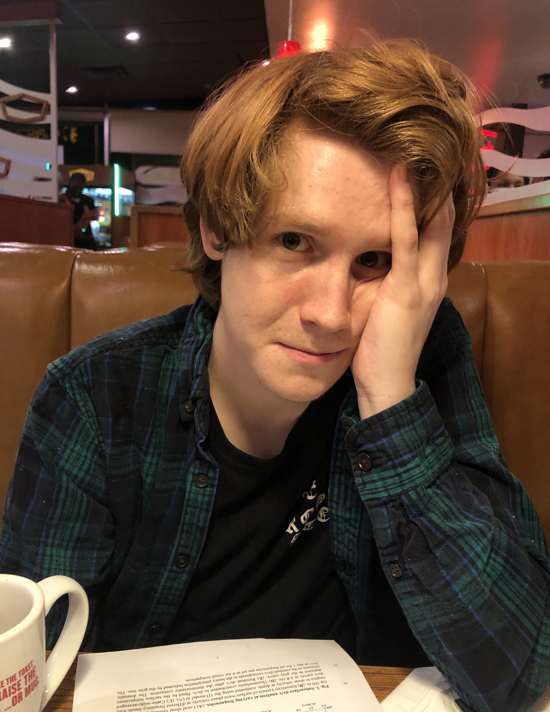

Thanks for stopping by my webpage! I graduated with Geology and Applied Math Degrees from UNC (where I was advised by Jonathan Lees) in 2022. I currently am advised by Jennifer Jackson and Zhongwen Zhan. Up to this point, my research has centered on seismo-acoustic monitoring, with a particular focus on infrasound data. I've authored a couple papers which you can check out at my Google Scholar below. One considered changes in ambient infrasound noise in Las Vegas during the pandemic. The other described topographically scattered infrasound waves, recorded on balloons in the stratosphere. At this point, I'm expanding my horizons a bit, studying the shallow subsurface with DAS and (in a total break from my current experience) characterizing the mineral Römerite under low temperature conditions.